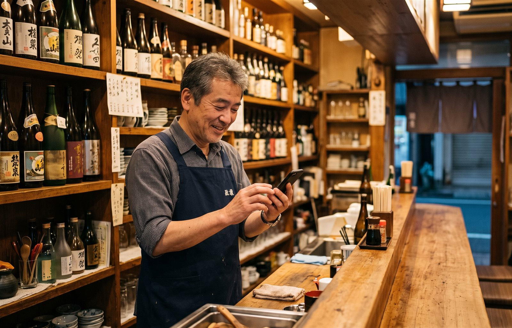

コミヨホウ ／ 記事
飲食店の仕込み量の決め方
「勘」を数字に変える5つのステップ
仕込みすぎて捨てる日と、足りなくて断る日。どちらも同じくらい痛い損失です。特別な機械もPOSレジも使わず、ノート1冊から始められる決め方をまとめました。実際の計算例つきです。

「明日、どれくらい仕込めばいいのか」。毎日この判断をしているのに、教わる機会はほとんどありません。多くのお店が、長年の経験と勘でなんとかしています。
勘は決して悪いものではありません。何年も店に立った人の勘は、かなり当たります。ただ、勘には弱点があります。外れた日の記憶が残らないことです。
捨てた日のことは覚えていても、「先月の火曜は何食出たか」は思い出せない。だから同じ失敗が繰り返されます。この記事では、その勘を裏付ける数字の作り方を説明します。
そもそも、なぜ外れるのか
客足は、いくつもの要因が重なって決まります。よく効くのは次のようなものです。
- 曜日……金曜と火曜では、そもそも土台が違う
- 天気……とくに雨と、夏の猛暑・冬の寒波
- 近所の行事……お祭り、学校行事、近隣企業の繁忙期
- 給料日前後……25日以降と、月末の落ち込み
- 連休の位置……前日か、中日か、最終日か
頭の中で全部を同時に処理するのは、無理があります。だから「なんとなく多めに」となり、余ります。
逆に言えば、要因を1つずつ数字にして、順番に掛けていけばいいということです。
ステップ1｜まず客数だけを記録する
最初にやることは1つだけです。閉店後に、その日の客数をメモする。
売上ではなく客数です。売上は単価に左右されますが、仕込み量に効くのは「何人来たか」だからです。
記録するのは4つだけ
- 日付と曜日
- 客数
- 天気（晴・曇・雨・雪の4つで十分）
- 特記事項（お祭り、近所の工事、貸切など。無ければ空欄）
凝ったフォーマットは要りません。続かなくなります。ノートに1行、レジ横のカレンダーの余白でも構いません。1日15秒で終わる形にすることが何より大事です。
目安として、1ヶ月分たまると曜日ごとの傾向が見え始め、3ヶ月で天気の影響まで読めるようになります。
ステップ2｜曜日ごとの平均を出す
1ヶ月ぶんたまったら、曜日ごとに平均を出します。電卓で足して割るだけです。
| 曜日 | 1回目 | 2回目 | 3回目 | 4回目 | 平均 |
|---|---|---|---|---|---|
| 火曜 | 18 | 22 | 16 | 20 | 19 |
| 水曜 | 24 | 21 | 26 | 25 | 24 |
| 金曜 | 38 | 42 | 35 | 41 | 39 |
| 土曜 | 44 | 40 | 47 | 45 | 44 |
曜日ごとの平均客数（例）
これが土台の数字です。「金曜は39人前後」と分かっているだけで、仕込みの精度はかなり上がります。
ここで多くの人が驚くのは、思っていた数字とズレていることです。「うちは水曜が暇」と思っていたら実は火曜の方が少なかった、というのはよくある話です。記憶は、印象の強い日に引っぱられます。
ステップ3｜天気で補正する
次に、天気による増減を出します。同じ曜日で、晴れの日と雨の日を比べるだけです。
→ 31 ÷ 42 ＝ 0.74 （雨の日はおよそ26%減）
「雨の日係数」の作り方
この「0.74」が雨の日係数です。天気予報が雨なら、土台の数字にこれを掛けます。
雨の影響はお店によってかなり違います。駅前で傘をさして歩ける立地なら1割減で済みますが、駐車場から入口まで濡れるお店だと4割落ちることもあります。他店の一般論ではなく、自分の店の数字を使うのが肝心です。
雨以外で係数を作る価値があるもの
- 猛暑日（35℃以上）……ランチは減り、夜は増える店が多い
- 雪……北陸では影響が大きく、平日夜は半減することも
- 月末……給料日前で財布が締まる
ステップ4｜特異日に印をつける
平均から大きく外れた日には、必ず理由があります。記録を見返して、外れた日に理由を書き足してください。
- 近所の小中学校の運動会・文化祭
- 地域のお祭り、花火大会
- 近隣企業の歓送迎会シーズン（3月・4月・12月）
- 大型連休の中日（意外と落ちる店が多い）
これが翌年そのまま使えます。1年続けると、来年の同じ時期の予測材料になるのが、記録の一番大きな見返りです。
ステップ5｜メニュー別の出数比率を掛ける
ここまでで「明日は何人来そうか」が出ました。最後に、それを食材の量に変換します。
過去の伝票から、看板メニューが客数の何割に出ているかを数えます。
29人 × 名物メニューの出数比率 0.6 ＝ 約17食ぶん仕込む
5ステップをつなげると、こうなります
この計算を、日持ちしない食材の上位3〜5品目についてやれば十分です。全メニューでやろうとすると続きません。
よくある3つの失敗
1. 最初から完璧にやろうとする
項目を増やしすぎて、2週間で挫折するのが最も多いパターンです。客数と天気の2つだけで始めてください。物足りないくらいがちょうどいいです。
2. 平均だけを見て、ばらつきを見ない
平均30人でも、「25〜35人」の店と「10〜50人」の店では作戦が変わります。後者なら、途中から追加で仕込める形（半仕込みで止める、冷凍を挟む）を考えた方が現実的です。
3. 外れた日を放置する
大きく外れた日こそ情報の宝です。「なぜ外れたか」を一言書くだけで、次から同じ失敗が減ります。
それでも、続けるのが難しいとき
ここまで読んで、正直「毎日は無理だ」と思われたかもしれません。それは自然な反応です。閉店後は疲れています。
実際、この方法の最大の難所は計算ではなく、記録を続けることです。1ヶ月続けば効果は出ますが、その1ヶ月が越えられません。
もし手作業で続けるのが難しければ、天気や地域の行事を自動で拾って計算してくれる仕組みに任せる手もあります。私たちが作っているコミヨホウは、まさにこの記事の計算を自動化したものです。お店でやることは1日ひとタップ、結果は毎夕LINEに1通届きます。
ただ、この記事の方法をノートで実践するだけでも、仕込みの精度は確実に上がります。 まずは客数を記録するところから、今日の閉店後に始めてみてください。
コミヨホウについて
客足を動かす8つの要因をAIが毎日自動で集めて計算し、「明日の来店みこみ・売上みこみ・仕込みの目安」をLINEに1通お届けするサービスです。POSレジとの連携は不要。月額5,500円（税込）、解約はいつでも違約金なしです。
コミヨホウの詳細を見る →